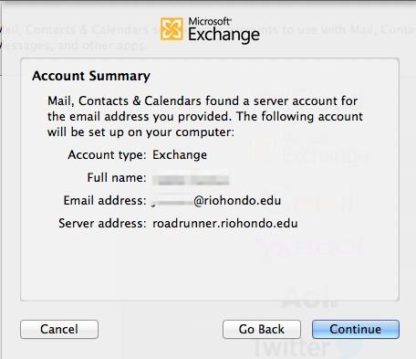
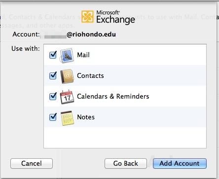

Rio Hondo College
Information Technology Services


How To:
Configure Mac OS X With Exchange
Your Rio Hondo email is Microsoft Exchange account and is able to be synchronized with your Mac OS X 10.7 and 10.8 device. You will be able to use the built-in Mail, Calendar, and Contacts applications.
Please follow the steps below to configure your Rio Hondo exchange account on your Macintosh computer. Click on the images to enlarge them.
Please ensure that your device is connected to the internet prior to following these steps.
These directions will not work on older versions of Mac OS X. Please use the Microsoft Office suite appropriate for your OS version.
Click on the Apple icon in the upper left hand corner of your screen and select System Preferences.
{kind=link}
Click on Mail, Contacts & Calendars.
{kind=link}
Click on Microsoft Exchange
{kind=link}
Enter your name as you would like to appear on your out-going email. Enter your full email address for Rio Hondo in the Email field and include the @riohondo.edu. Enter your network password in the password field.
Click Continue.
{kind=link}
Once the credentials are confirmed you will see the Account Summary confirmation box displaying your name, email, and the server address.
If you do not see the Account Summary screen please check that your email address and password are correctly entered.
Click Continue.
{kind=link}
Confirm the services that you would like to synchronize with your Mac and then click Add Account.
{kind=link}
Your selected Rio Hondo services will sync shortly with your computer. Please use Mail, Calendar, Contacts, Reminders*, and Notes* to access the exchange information.
{kind=link}
* Reminders and Notes are not available in OS X 10.7
Please contact the help desk if you need further assistance.